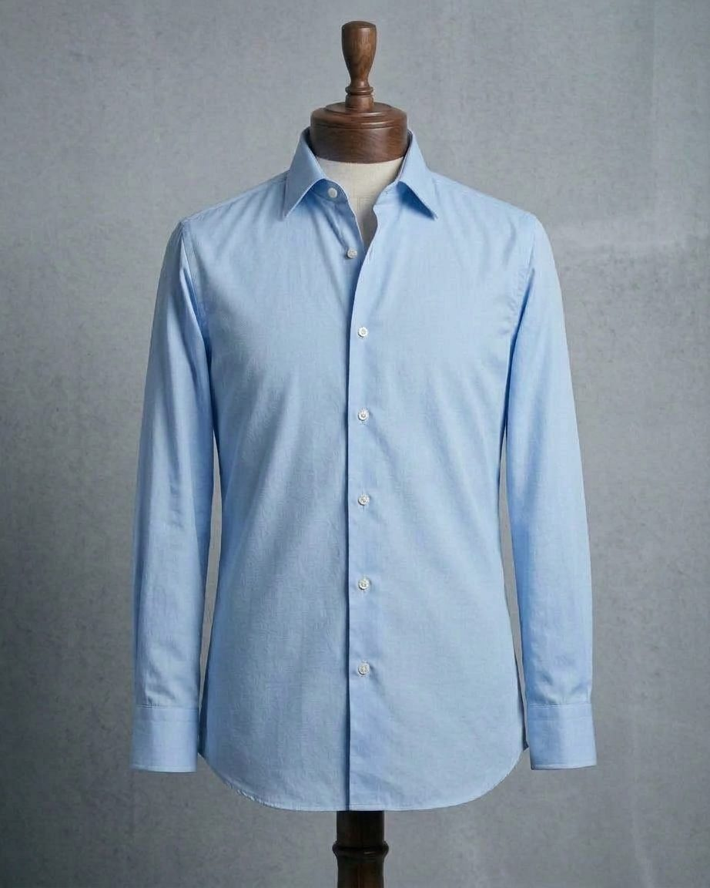
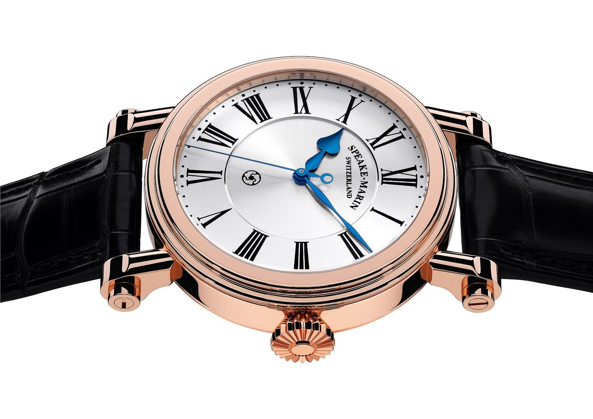
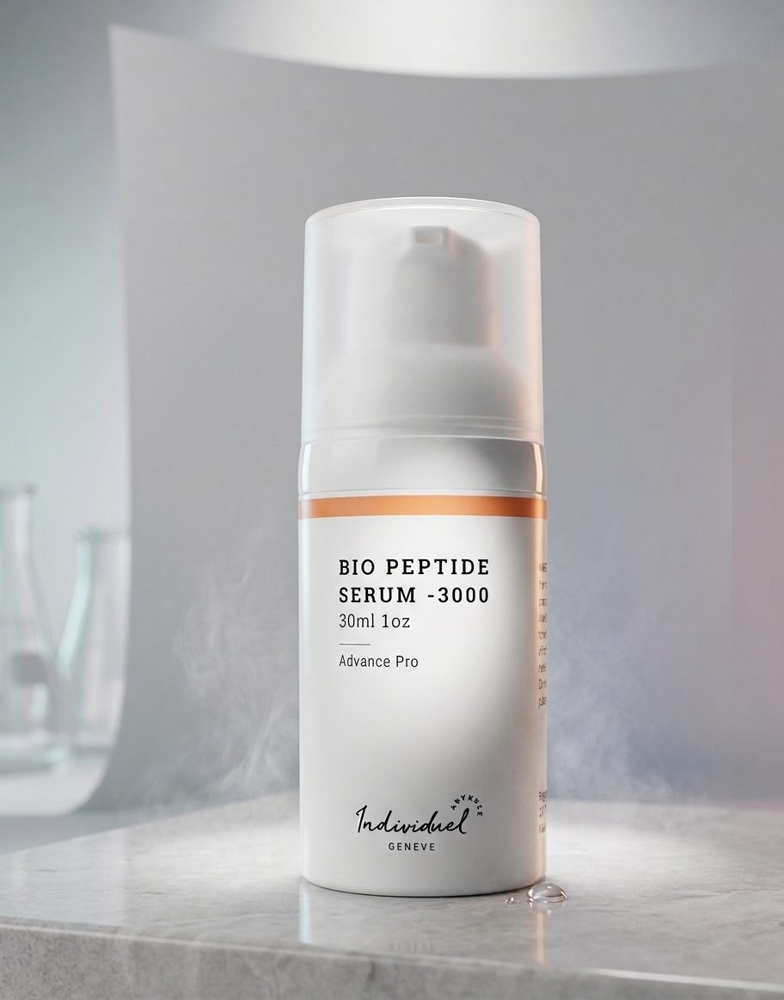
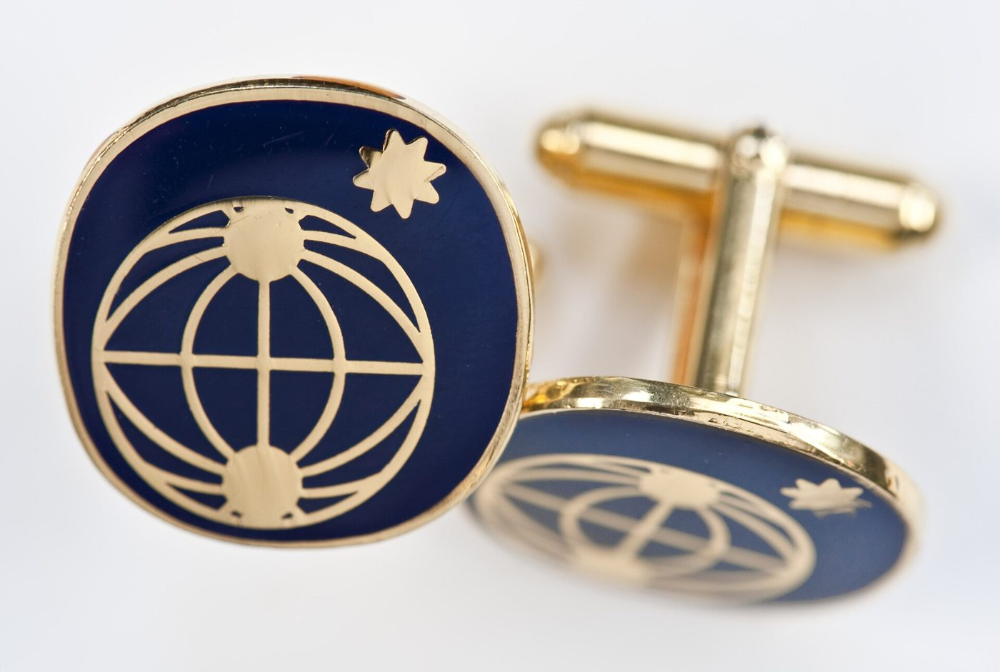
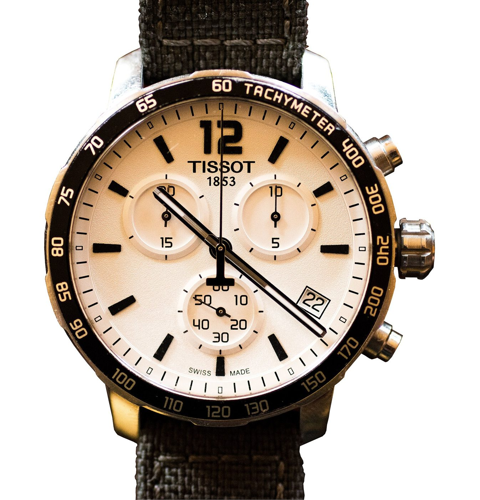
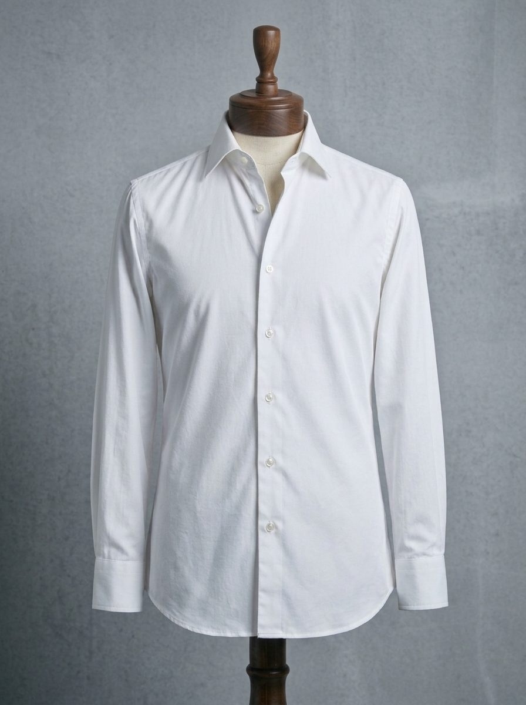
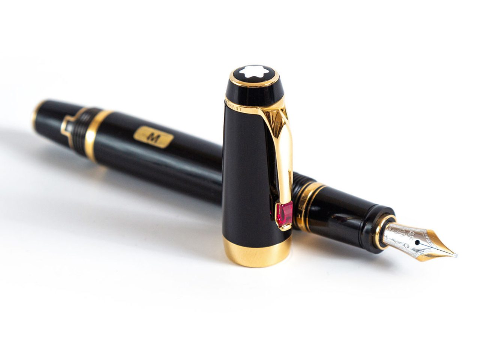
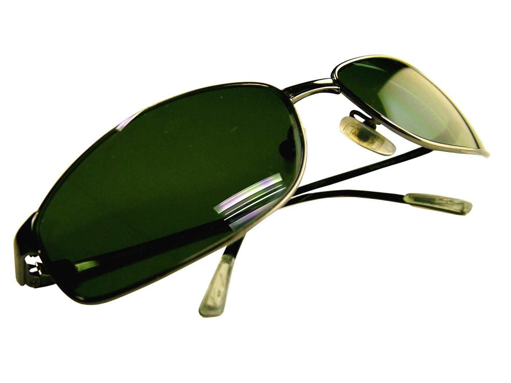

06 · Producto premium
Producto premium
Camisería, relojería, cuidado de la piel, joyería y accesorios: artículos comerciales de alta gama, listos para comprar y para presumir en redes.







